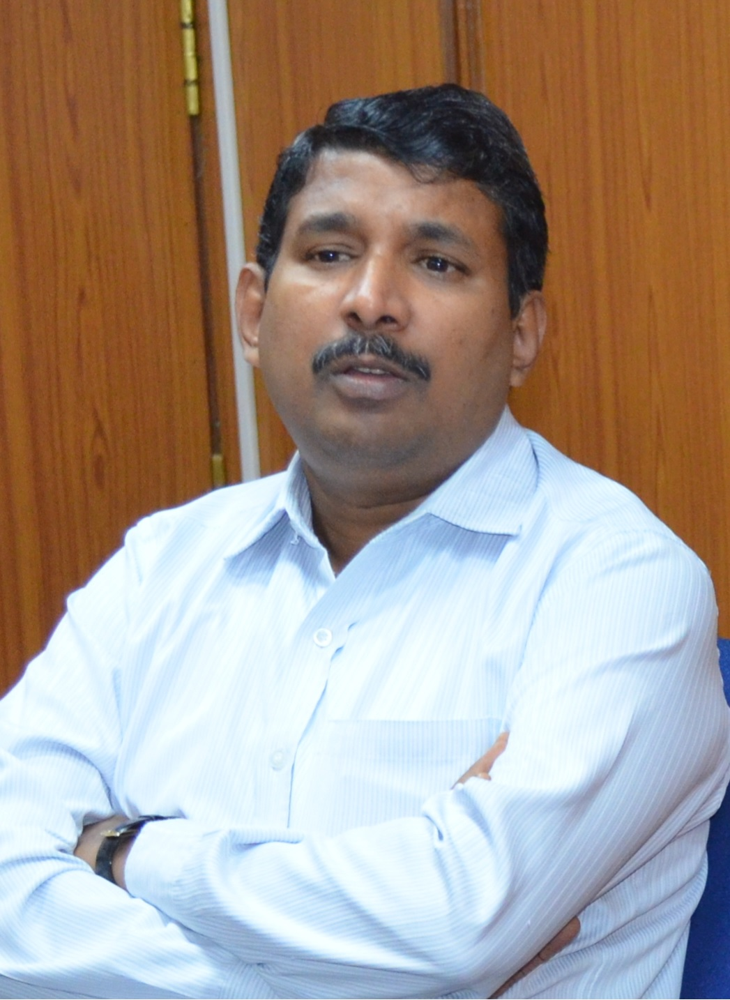

Shri. KP Anand
ACCOUNTANT GENERAL ( ECONOMIC & REVENUE SECTOR AUDIT )

Shri K.P. Anand assumed charge as Accountant General (Economic and Revenue Sector Audit) on 02-04-2018. Shri K P Anand belongs to 1996 batch of IAAS.
He graduated from Madras Veterinary College in 1994. Prior to assuming this charge, he has served as Principal Director of Audit, North East Frontier Railway, Accountant General, Assam (additional charge), Principal Director, Regional Training Institute, Chennai and Principal Director of Audit, Southern Railway, Chennai. He has also experience in audit and accounts of State Government Departments of Government of Arunachal Pradesh, Public Sector Undertakings of Central Government, Public Sector Undertakings of State Government of Tamil Nadu and Public Sector Undertakings of Government of Union Territory of Pondicherry.
He has also served as Director (Finance) on deputation basis with Southern Power Distribution Company of Andhra Pradesh Ltd. His international audit assignments include International Organization for Migration at Manila and Geneva, United Nations International Computing Centre at Geneva, Programme for Research and Training in Tropical Diseases (TDR), World Health Organization at Geneva, United Nations Office at Vienna and United Nations Interregional Crime and Justice Research at Turin.
His areas of interest include various forms of arts and literature.
View Staff